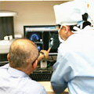

インプラントならアイデンタルクリニック トップページ > 安心の保証制度
|  | 治療（施術）後に大切なことは、 インプラントでいちばん怖いのは、インプラント周囲炎と言う、歯周病と同じような病気です。これは骨を溶かしてしまう病気なので、インプラントを喪失してしまう危険性があります。 自覚症状が出る頃は、かなり進行している状態と言えますので、こうならないために、定期的なメンテナンス検診をしてください。 |
|---|
治療が終了したらメンテナンスプログラムに入ります。 メンテナンスにご来院いただくと、周囲に汚れがついていないか、専門家が慎重にチェックし、汚れをつきにくくするために、歯のブラッシングのご指導をいたします。また、かみ合わせをチェックすることにより、かむ力が歯列全体に上手に分散されるよう調整いたします。 患者様にはインプラントの状態が分かるように、「メンテナンスブック」をお渡し、ご来院の度に記録を取って継続的に管理していきます。患者様と一緒になって、歯を大切にしたいという思いでメンテナンス（アフターケア）に取り組んでいます。 |
インプラントやお口の中をケアするためには、それにふさわしいケアグッズを使うことをお勧めしています。 一般の歯ブラシに比べて、非常にやわらかいので、手術直後のデリケートな歯肉のケアにぴったりな「エクストラウルトラソフト歯ブラシ」や、 最適なケアグッズやその利用方法も丁寧に説明しますので、ご安心ください。 |
一般的にインプラントは、 その他にも、当院でのインプラント治療後にお気付きの点がありましたら早めにご相談ください。即座にご対応致します。 |